Досягнення
- Національні
- Чемпіонат Іспанії:
 Чемпіон(33, рекорд): 1931/32; 1932/33; 1953/54; 1954/55; 1956/57; 1957/58; 1960/61; 1961/62; 1962/63; 1963/64; 1964/65; 1966/67; 1967/68; 1968/69; 1971/72; 1974/75; 1975/76; 1977/78; 1978/79; 1979/80; 1985/86; 1986/87; 1987/88; 1988/89; 1989/90; 1994/95; 1996/97; 2000/01; 2002/03; 2006/07; 2007/08; 2011/12; 2016/17
Чемпіон(33, рекорд): 1931/32; 1932/33; 1953/54; 1954/55; 1956/57; 1957/58; 1960/61; 1961/62; 1962/63; 1963/64; 1964/65; 1966/67; 1967/68; 1968/69; 1971/72; 1974/75; 1975/76; 1977/78; 1978/79; 1979/80; 1985/86; 1986/87; 1987/88; 1988/89; 1989/90; 1994/95; 1996/97; 2000/01; 2002/03; 2006/07; 2007/08; 2011/12; 2016/17- 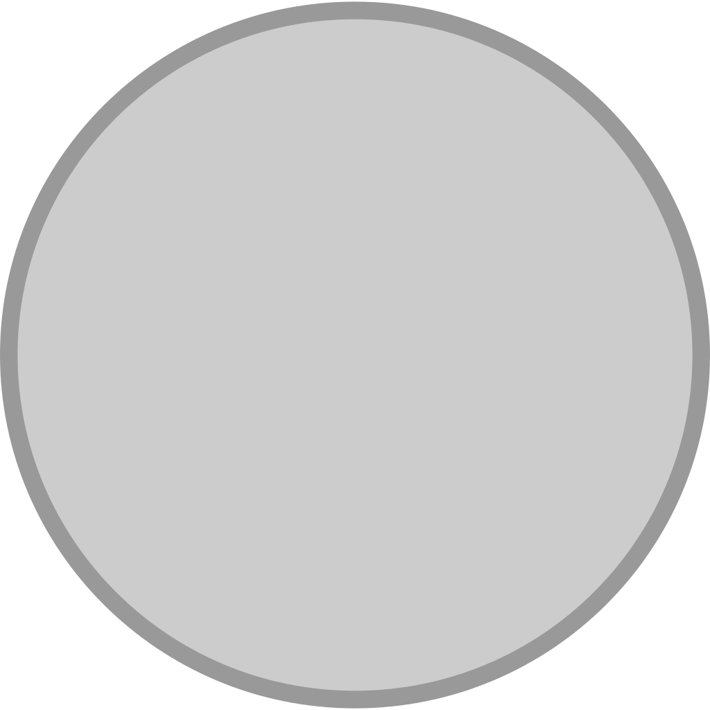Віце-чемпіон(23): 1929; 1933/34; 1934/35; 1935/36; 1941/42; 1944/45; 1958/59; 1959/60; 1965/66; 1980/81; 1982/83; 1983/84; 1991/92; 1992/93; 1998/99; 2004/05; 2005/06; 2008/09; 2009/10; 2010/11; 2012/13; 2014/15; 2015/16
- Кубок Іспанії:
- Володар(19): 1905; 1906; 1907; 1908; 1917; 1934; 1936; 1946; 1947; 1961/62; 1969/70; 1973/74; 1974/75; 1979/80; 1981/82; 1988/89; 1992/93; 2010/11; 2013/14
- Фіналіст(20): 1903; 1916; 1918; 1924; 1929; 1930; 1933; 1940; 1943; 1958; 1959/60; 1960/61; 1967/1968; 1978/79; 1982/83; 1989/90; 1991/92; 2001/02; 2003/04; 2012/13
- Суперкубок Іспанії:
- Володар(11): 1988; 1989; 1990; 1993; 1997; 2001; 2003; 2008; 2012; 2017; 2019/20
- Фіналіст(5): 1982; 1995; 2007; 2011; 2014
- Кубок Еви Дуарте:
- Володар(1): 1947
- Кубок Ліги:
- Володар(1): 1784/85
- Фіналіст(1): 1982/83
- Регіональний Чемпіонат/Трофей Манкомунадо:
- Чемпіон(23,рекорд): 1904-05, 1905-06, 1906-07, 1907-08, 1909-10, 1912-13, 1915-16, 1916-17, 1917-18, 1919-20, 1921-22, 1922-23, 1923-24, 1925-26, 1926-27, 1928-29, 1929-30, 1930-31, 1931-32, 1932-33, 1933-34, 1934-35, 1935-36
- Чемпіонат Іспанії:
- Міжнародні
- Ліга чемпіонів УЄФА / Кубок чемпіонів:
- Володар(13,рекорд): 1956, 1957, 1958, 1959, 1960, 1966, 1998, 2000, 2002, 2014, 2016, 2017, 2018
- Фіналіст(3): 1962, 1964, 1981
- Кубок УЄФА:
- Володар(2): 1985, 1986
- Кубок влодарів кубків УЄФА:
- Фіналіст(2): 1971, 1983
- Суперкубок УЄФА:
- Володар(4): 2002, 2014, 2016, 2017
- Фіналіст(3): 1998, 2000, 2018
- Міжконтинентальний кубок:
- Володар(3): 1960, 1998, 2002
- Клубний чемпіонат світу:
- Володар(4): 2014, 2016, 2017, 2018
- Малий кубок світу:
- Володар(2): 1952, 1956
- Фіналіст(1): 1963
- Латинський кубок:
- Володар(2): 1955, 1957
- Іберо-американський кубок:
- Володар(1,рекорд): 1994
- Іберійський кубок:
- Фіналіст(1): 2000
- Кубок Франца Беккенбауера:
- Володар(1): 2010
- Кубок Сантьяго Бернабеу:
- Володар(28,рекорд): 1981, 1983, 1984, 1985, 1987, 1989, 1991, 1994, 1995, 1996, 1997, 1998, 1999, 2000, 2003, 2005, 2006, 2007, 2008, 2009, 2010, 2011, 2012, 2013, 2015, 2016, 2017, 2018
- Фіналіст(9): 1980, 1986, 1988, 1990, 1992, 1993, 2001, 2002, 2004
- Ліга чемпіонів УЄФА / Кубок чемпіонів:
Рекорди
Рекорди команди
- 13 перемог в Лізі чемпіонів УЄФА
- 3 перемоги в Лізі чемпіонів підряд
- 214 перемог в матчах Ліги чемпіонів УЄФА
- 43 матча підряд «Реал» забивав в Лізі чемпіонів УЄФА
- 33 титула чемпіона Іспанії
- 121 забитий гол в чемпіонаті Іспанії за один сезон
- 73 матча підряд «Реал» забивав хоча б один гол
Рекорди гравців
- Кріштіану Роналду – 17 голів за один сезон Ліги чемпіонів УЄФА
- Кріштіану Роналду – 11 голів за один сезон в груповому етапі Ліги чемпіонів УЄФА
- Кріштіану Роналду – 19 голів за один календарний рік Ліги чемпіонів УЄФА
За кількістю зіграних матчів
Станом на 12 грудня 2020 року.| № | Ім'я | Період | Ла Ліга | Кубок Короля |
Єврокубки | Інші | Матчі | |
|---|---|---|---|---|---|---|---|---|
| 1 | 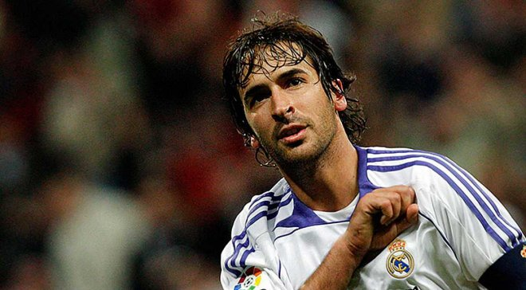 | 1994 - 2010 | 550 | 37 | 135 | 19 | 741 | |
| 2 | 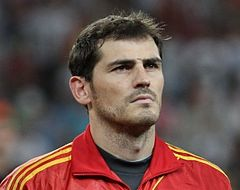 | 1999 - 2015 | 510 | 40 | 152 | 23 | 725 | |
| 3 | 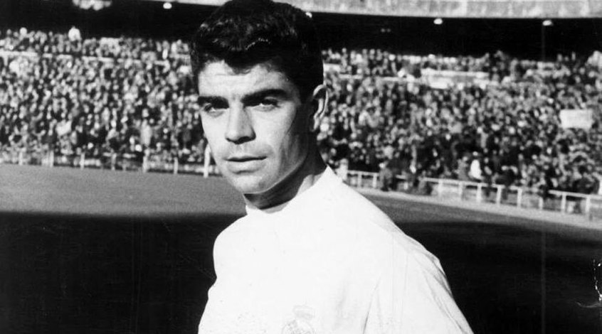 | 1983 - 2001 | 524 | 67 | 100 | 20 | 711 | |
| 4 | 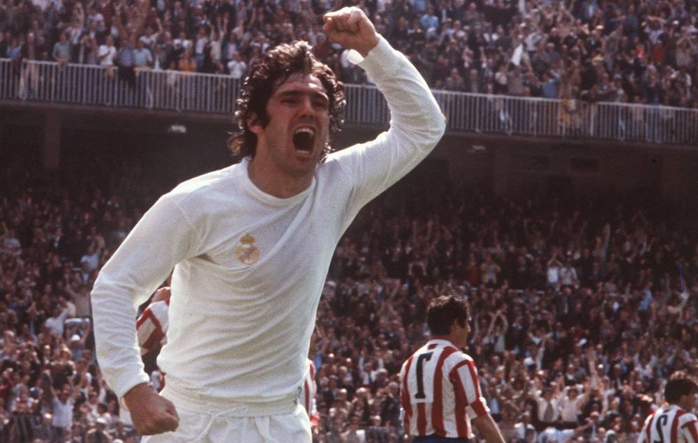 | 1971 - 1988 | 461 | 84 | 87 | 13 | 645 | |
| 5 | 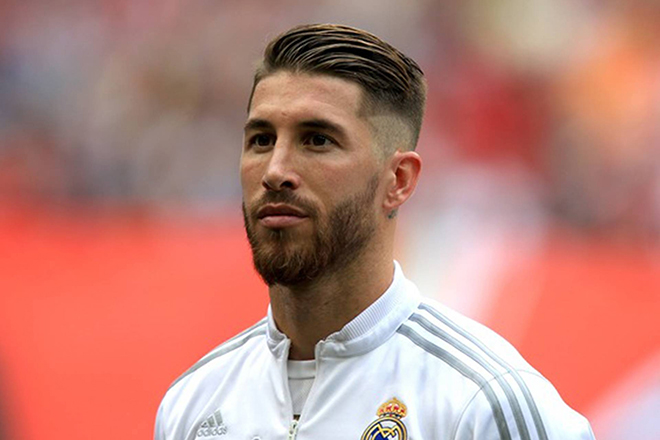 | 2005 - н.ч. | 437 | 46 | 123 | 24 | 630 | |
| 6 | 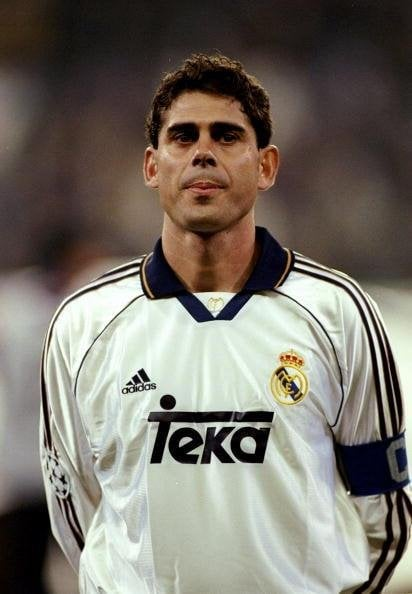 | 1989 - 2003 | 439 | 43 | 103 | 16 | 601 | |
| 7 | 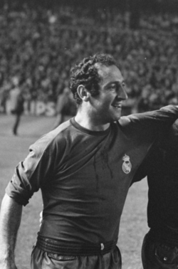 | 1953 - 1971 | 428 | 74 | 95 | 2 | 599 | |
| 8 | 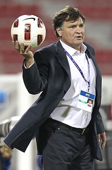 | 1973 - 1989 | 414 | 61 | 90 | 12 | 577 | |
| 9 | 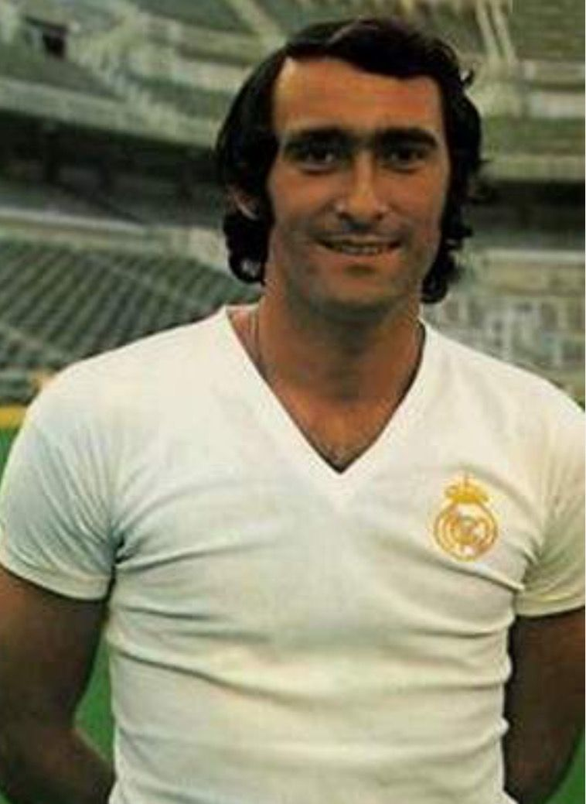 | 1964 - 1979 | 417 | 67 | 75 | 2 | 561 | |
| 10 | 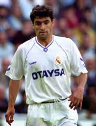 | 1982 - 1996 | 404 | 53 | 88 | 14 | 559 | |
{kind=link}
{kind=link}
{kind=link}
{kind=link}
{kind=link}
{kind=link}
{kind=link}
{kind=link}
{kind=link}
{kind=link}
За кількістю голів
Станом на 30 грудня 2020 року.| № | Ім'я | Період | Голи | Матчі | |
|---|---|---|---|---|---|
| 1 |  |
2009 - 2018 | 450 | 438 | |
| 2 | 1994 - 2010 | 323 | 741 | ||
| 3 | 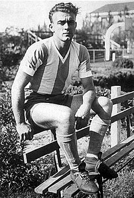 | 1953 - 1964 | 308 | 396 | |
| 4 | 1971 - 1988 | 290 | 645 | ||
| 5 | 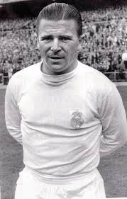 | 1958 - 1966 | 242 | 262 | |
| 6 | 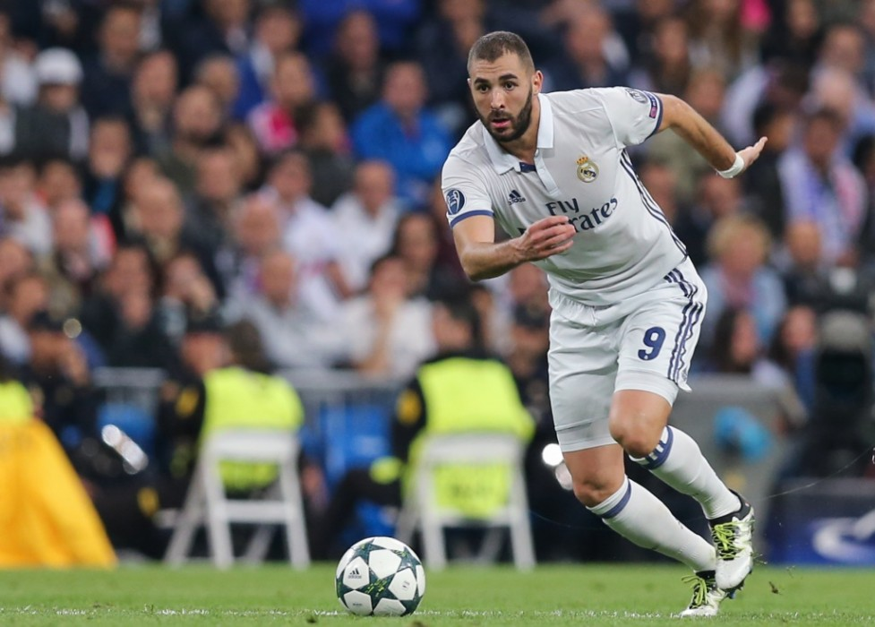 | 2009 - н.ч. | 239 | 493 | |
| 7 | 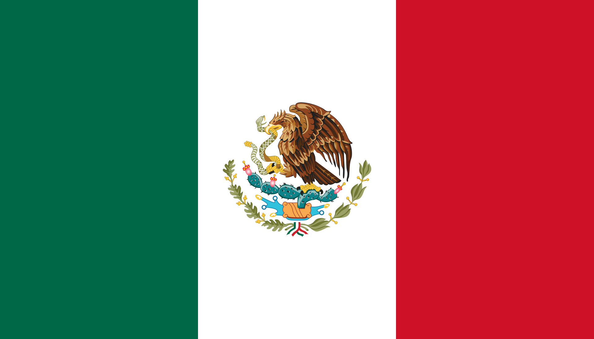 Уго Санчез | 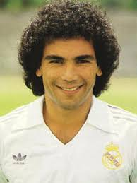 | 1985 - 1992 | 208 | 283 |
| 8 | 1953 - 1971 | 182 | 601 | ||
| 9 | 1953 - 1971 | 172 | 561 | ||
| 10 | 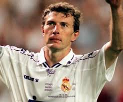 | 1983 - 1995 | 171 | 463 | |
{kind=link}
{kind=link}
{kind=link}
{kind=link}
{kind=link}